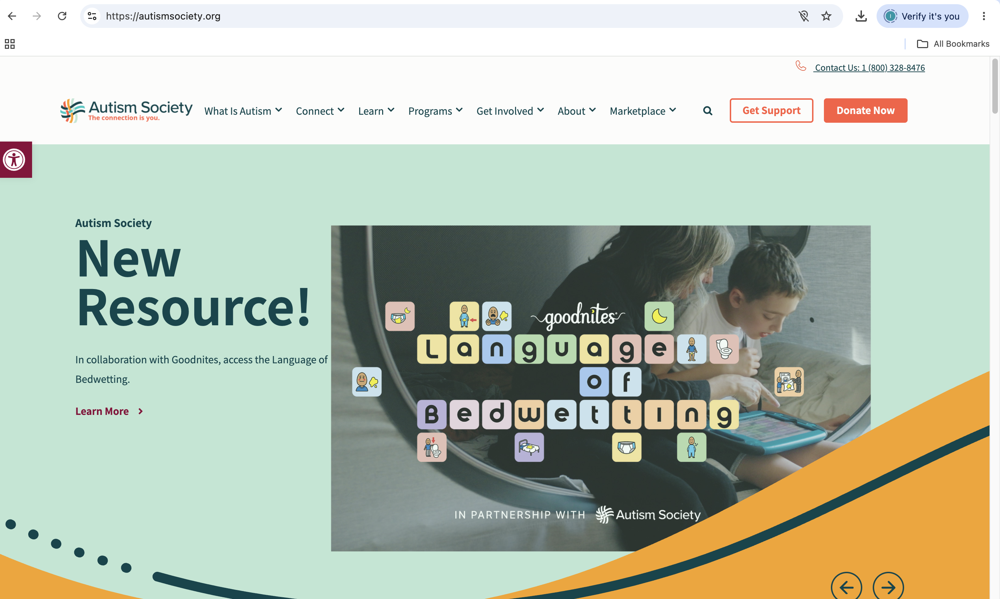

Website Screenshot

Website Information
Website Name and URL
The website I chose to evaluate is the Austism Society of America. Visit Autism Society Websiete
Target Audience
This website is for people with autism, their families, caregivers, and anyone looking for information or support about autism.
Website Organization and Design
Organization
The website has different sections that help visitors find information about autism, rsources, and support. The navigation menu makes it easier to get to the different topics without having to search the entrie website.
CRAP Design Principles
The website has contrast, repetition, aligment, and proximity. The headings and sections help separate information, and the consistent colors and layout make the pages look organized. The accessibility checker found some color contrast issues that could make certain text harder to read.
Website Usability
Effectiveness
I think the website is effective because it provides helpful information about autism and resources for families. Vistitors can learn more about autism and find support.
Efficiency
The website is easy to navigate because the information is separated into different categories. This makes it easier to find what you are looking for without going through every page.
Engagement
I like how the website uses pictures, colors, and different sections to keep visitors interested. The information is useful, esecially for families looking for autism resoures.
Accessibility Evalution
Audit Score
This website homepage received an accessibility audit score of 18 out of 100. The checker found 7 critical issues 40 passed audits, and 22 items that need manual review.
Accessibility Issues
Some of the problems are poor color contrast, images missing altrnative text, and headings not being in correct order.
Recommendations for Improvment
- I would recommend improving the color contrast. The accessibility checker found 12 elements with poor color contrast, which could make some text hard for visitors to read.